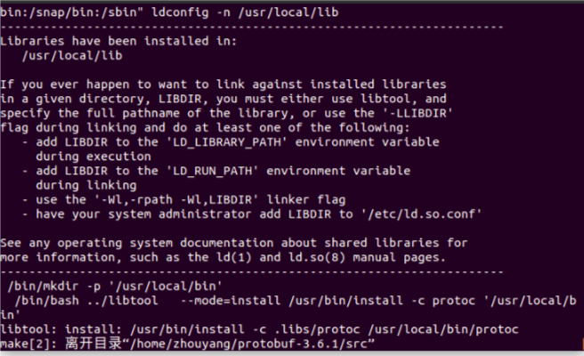
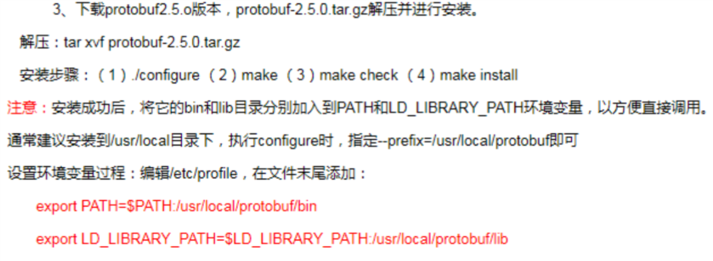

前言
之前只是简单的用caffe中的几个命令跑了跑数据集。要学会caffe，protobuf是绕不过去的，现在打算好好学习学习Protocol Buffer。
ProtoBuf相关查询
1、我觉得这个博文写得比较好Protocol Buffers C++入门教程写得比较好，推荐看看。
2、Google-Protocol官网
官网资料写得比较好，推荐大家看看。百度上能查到的中文入门指南其实都是来源于官方文档。阅读原始官方文档才是入门的正确途径。英语写得也不是很难。
3、官方ProtoBuf的GithubREADME.md的Protobuf运行时安装表格中C++语言资源Src是C++部分的源代码及安装说明。
ProtoBuf安装
安装依赖
To build protobuf from source, the following tools are needed:
- autoconf
- automake
- libtool
- make
- g++
- unzip
On Ubuntu/Debian, you can install them with:
$ sudo apt-get install autoconf automake libtool curl make g++ unzip
On other platforms, please use the corresponding package managing tool to install them before proceeding
下载源码
To get the source, download one of the release .tar.gz or .zip packages in the release page:
For example:
- if you only need C++, download protobuf-cpp-[VERSION].tar.gz
- if you need C++ and Java, download protobuf-java-[VERSION].tar.gz (every package contains C++ source already)
- if you need C++ and multiple other languages, download protobuf-all-[VERSION].tar.gz
You can also get the source by “git clone” our git repository. Make sure you have also cloned the submodules and generated the configure script (skip this if you are using a release .tar.gz or .zip package):
$ git clone https://github.com/protocolbuffers/protobuf.git
$ cd protobuf
$ git submodule update –init –recursive
$ ./autogen.sh
编译和安装
编译安装步骤
To build and install the C++ Protocol Buffer runtime and the Protocol Buffer compiler (protoc) execute the following:
$ cd 目录
$ ./configure
$ make
$ make check
$ sudo make install
$ sudo ldconfig // refresh shared library cache.
编译完成后，查看Protocol Buffer版本：
其实Protocol Buffers的编译器叫protoc。
protoc –version
当前我用的版本是3.6.1
If “make check” fails, you can still install, but it is likely that some features of this library will not work correctly on your system. Proceed at your own risk.
For advanced usage information on configure and make, please refer to the autoconf documentation:
http://www.gnu.org/software/autoconf/manual/autoconf.html#Running-configure-Scripts

环境配置参考：

Hint on install location(提示安装位置)
By default, the package will be installed to /usr/local. However, on many platforms, /usr/local/lib is not part of LD_LIBRARY_PATH. You can add it, but it may be easier to just install to /usr instead. To do this, invoke configure as follows:
./configure –prefix=/usr
If you already built the package with a different prefix, make sure to run “make clean” before building again.
当前我在~/.bashrc中加入：
export LD_LIBRARY_PATH=”$LD_LIBRARY_PATH:/usr/local/lib”
更新：
source .bashrc
使用Protocol Buffer
编译方法：指定源目录（即你的应用程序源代码所在的目录—如果不指定的话，就使用当前目录）、目标目录（即生成的代码放置的目录）、以及你的.proto文件所在的目录。命令如下：
protoc -I=源目录 –cpp_out=输出目录 proto目录（addressbook.proto）
因为需要生成的是C++类，所以使用了–cpp_out选项参数—protocol buffers也为其他支持的语言提供了类似的选项参数，如–java_out=OUT_DIR，指定java源文件生成目录。
以上面自定义的student.proto为例，来编译产生我们的student消息类。运行如下命令：
protoc student.proto –cpp_out=./ //生成输出路径不能省略
这样就可以在我指定的当前目录下生成如下文件：
student.pb.h：声明你生成的类的头文件。
student.pb.cc：你生成的类的实现文件。
具体可参见博文开始所说的参考文章Protocol Buffers C++入门教程
下面的官方参考手册我还没仔细研究😂
Compiling dependent packages
To compile a package that uses Protocol Buffers, you need to pass various flags to your compiler and linker. As of version 2.2.0, Protocol Buffers integrates with pkg-config to manage this. If you have pkg-config installed, then you can invoke it to get a list of flags like so:
pkg-config –cflags protobuf # print compiler flags
pkg-config –libs protobuf # print linker flags
pkg-config –cflags –libs protobuf # print both
For example:
c++ my_program.cc my_proto.pb.cc pkg-config --cflags --libs protobuf
Note that packages written prior to the 2.2.0 release of Protocol Buffers may not yet integrate with pkg-config to get flags, and may not pass the correct set of flags to correctly link against libprotobuf. If the package in question uses autoconf, you can often fix the problem by invoking its configure script like:
configure CXXFLAGS=”$(pkg-config –cflags protobuf)” \
LIBS=”$(pkg-config –libs protobuf)”
This will force it to use the correct flags.
If you are writing an autoconf-based package that uses Protocol Buffers, you should probably use the PKG_CHECK_MODULES macro in your configure script like:
PKG_CHECK_MODULES([protobuf], [protobuf])
See the pkg-config man page for more info.
If you only want protobuf-lite, substitute “protobuf-lite” in place of “protobuf” in these examples.
Note for Mac users
For a Mac system, Unix tools are not available by default. You will first need to install Xcode from the Mac AppStore and then run the following command from a terminal:
$ sudo xcode-select –install
To install Unix tools, you can install “port” following the instructions at https://www.macports.org . This will reside in /opt/local/bin/port for most Mac installations.
$ sudo /opt/local/bin/port install autoconf automake libtool
Then follow the Unix instructions above.
Note for cross-compiling
The makefiles normally invoke the protoc executable that they just built in order to build tests. When cross-compiling, the protoc executable may not be executable on the host machine. In this case, you must build a copy of protoc for the host machine first, then use the –with-protoc option to tell configure to use it instead. For example:
./configure –with-protoc=protoc
This will use the installed protoc (found in your $PATH) instead of trying to execute the one built during the build process. You can also use an executable that hasn’t been installed. For example, if you built the protobuf package for your host machine in ../host, you might do:
./configure –with-protoc=../host/src/protoc
Either way, you must make sure that the protoc executable you use has the same version as the protobuf source code you are trying to use it with.
Note for Solaris users
Solaris 10 x86 has a bug that will make linking fail, complaining about libstdc++.la being invalid. We have included a work-around in this package. To use the work-around, run configure as follows:
./configure LDFLAGS=-L$PWD/src/solaris
See src/solaris/libstdc++.la for more info on this bug.
Note for HP C++ Tru64 users
To compile invoke configure as follows:
./configure CXXFLAGS=”-O -std ansi -ieee -D__USE_STD_IOSTREAM”
Also, you will need to use gmake instead of make.
Note for AIX users
Compile using the IBM xlC C++ compiler as follows:
./configure CXX=xlC
Also, you will need to use GNU make (gmake) instead of AIX make.
C++ Installation - Windows
If you only need the protoc binary, you can download it from the release page:
https://github.com/protocolbuffers/protobuf/releases/latest
In the downloads section, download the zip file protoc-$VERSION-win32.zip. It contains the protoc binary as well as public proto files of protobuf library.
Protobuf and its dependencies can be installed directly by using vcpkg:
vcpkg install protobuf protobuf:x64-windows
If zlib support is desired, you’ll also need to install the zlib feature:
vcpkg install protobuf[zlib] protobuf[zlib]:x64-windows
See https://github.com/Microsoft/vcpkg for more information.
To build from source using Microsoft Visual C++, see cmake/README.md.
To build from source using Cygwin or MinGW, follow the Unix installation instructions, above.
Binary Compatibility Warning
Due to the nature of C++, it is unlikely that any two versions of the Protocol Buffers C++ runtime libraries will have compatible ABIs. That is, if you linked an executable against an older version of libprotobuf, it is unlikely to work with a newer version without re-compiling. This problem, when it occurs, will normally be detected immediately on startup of your app. Still, you may want to consider using static linkage. You can configure this package to install static libraries only using:
./configure –disable-shared
Usage
The complete documentation for Protocol Buffers is available via the web at: